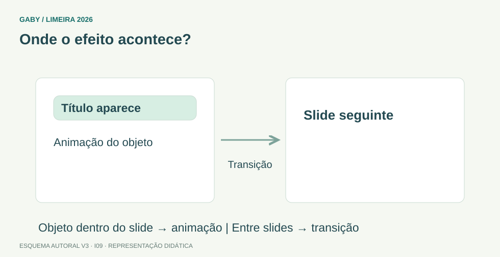

Objetivos do módulo
- Distinguir slide, layout, tema e apresentação.
- Diferenciar animação de transição.
- Entender objetos, anotações, guias e botões de ação.
- Separar Slide Mestre, layout, tema e Designer, e saber o que o Tamanho do Slide altera.
- Configurar transições e animações: Opções de Efeito, início, Duração, Atraso, Painel de Animação e gatilhos.
- Inserir vídeo, áudio, Cameo, links e gráficos, e organizar objetos sobrepostos.
- Usar os atalhos de edição e de apresentação e o Modo de Exibição do Apresentador.
- Configurar, gravar, imprimir e tornar acessível uma apresentação, conhecendo os limites do PowerPoint para a Web.
Onde o efeito acontece?

Descrição em texto do esquema
- Animação: Atua em um objeto do slide.
- Transição: Atua na passagem entre slides.
- Exemplo: Título aparece; depois o slide muda.
Oficina visual · aplique o esquema
Para um título aparecer aos poucos e, depois, passar ao próximo slide com esmaecimento, quais recursos utilizar?
Atividade autoral complementar da V3. Registre sua resposta; a resolução está no arquivo de gabarito e revisão.
Mapa do conteúdo
- 1. Estrutura
- 2. Objetos e organização
- 3. Transição x animação
- 4. Anotações e apresentação
- 5. Botões de ação e links
- 6. Trabalhar com slides: criar, duplicar, reutilizar, ocultar e numerar
- 7. Vídeo, áudio e Cameo
- 8. Configurar e gravar a apresentação
- 9. Imprimir slides, anotações e folhetos
- 10. Acessibilidade
- 11. PowerPoint para a Web: limites
1. Estrutura
Referência desta aula: PowerPoint do Microsoft 365 para Windows, em português do Brasil. Os nomes de guias, botões e atalhos abaixo são os dessa versão.
Apresentação é o arquivo completo; slide é cada página/tela. Layout define disposição de espaços reservados; tema padroniza elementos visuais como cores, fontes e efeitos.
Slide Mestre, layout, tema e Designer
Quatro recursos cuidam da aparência, cada um em um nível. A prova costuma trocar a função de um pela de outro.
| Recurso | Onde fica | O que faz |
|---|---|---|
| Tema | guia Design | Conjunto pronto de cores, fontes e efeitos aplicado à apresentação. |
| Layout | Página Inicial > Layout | Disposição dos espaços reservados (título, texto, imagem) de um slide. |
| Slide Mestre | Exibir > Slide Mestre | Slide principal que guarda a formatação e os elementos comuns (fontes, logotipo, posição dos espaços reservados). O que se altera nele vale para todos os slides baseados nele. Os layouts ficam subordinados ao mestre. |
| Designer | Página Inicial ou Design > Designer | Recurso do Microsoft 365 que analisa o conteúdo do slide e sugere ideias de design prontas; o usuário escolhe uma. |
Resumo da diferença: o Slide Mestre é onde você define um padrão para todos os slides; o Designer é o recurso inteligente que propõe arranjos para o slide que está sendo editado. Exemplo: para o brasão da prefeitura aparecer no canto de todos os slides, insira-o uma vez no Slide Mestre, em vez de colar em cada slide.
Tamanho do Slide
Caminho: guia Design > grupo Personalizar > Tamanho do Slide.
- Padrão (4:3): formato mais quadrado, de projetores e monitores antigos.
- Widescreen (16:9): formato largo; é o tamanho das apresentações novas.
- Tamanho do Slide Personalizado: largura, altura e orientação definidas pelo usuário.
O tamanho (e a orientação) vale para todos os slides da apresentação: não existe um slide 4:3 no meio de slides 16:9 no mesmo arquivo.
Quando o conteúdo não pode ser redimensionado automaticamente, o PowerPoint pergunta como ajustar:
| Opção | Efeito |
|---|---|
| Maximizar | Mantém o conteúdo grande. Parte dele pode ficar fora do slide. |
| Garantir o Ajuste | Reduz a escala do conteúdo para que tudo caiba no novo tamanho. Nada é cortado, mas os objetos ficam menores. |
2. Objetos e organização
Slides podem conter caixas de texto, imagens, formas, tabelas, gráficos, áudio e vídeo. Alinhar, distribuir, agrupar e ordenar objetos ajuda na composição. Régua e guias auxiliam posicionamento.
Ordem de empilhamento
Cada objeto do slide fica em uma camada. Quando dois objetos se sobrepõem, o da camada de cima cobre o de baixo. Essa ordem de empilhamento é independente da posição e do tamanho: mudar a ordem não desloca nem redimensiona nada. Os comandos ficam em Página Inicial > Organizar (e na guia de formato do objeto):
| Comando | Efeito |
|---|---|
| Trazer para a Frente | Leva o objeto para o topo da pilha. |
| Avançar | Sobe uma camada. |
| Enviar para Trás | Leva o objeto para o fundo da pilha. |
| Recuar | Desce uma camada. |
Painel de Seleção
O Painel de Seleção (Página Inicial > Organizar > Painel de Seleção, ou Alt+F10) mostra a lista de todos os objetos do slide, na ordem das camadas: o primeiro da lista é o que está por cima. Com ele é possível:
- selecionar um objeto pelo nome, mesmo que esteja totalmente coberto por outro;
- ocultar ou mostrar um objeto pelo ícone de olho. O objeto oculto continua no arquivo; só deixa de aparecer no slide. Ocultar não é excluir;
- reordenar as camadas, arrastando o item na lista ou usando as setas do painel;
- renomear os objetos, o que facilita achar cada um.
Cortar imagem não apaga o que foi cortado
O comando Cortar (guia Formato da Imagem) apenas esconde as bordas. As áreas cortadas permanecem no arquivo e podem ser recuperadas por quem o receber, bastando usar Cortar de novo. Para eliminá-las de fato: Formato da Imagem > Compactar Imagens > marcar Excluir áreas cortadas das imagens. A caixa Aplicar somente a esta imagem limita o efeito à imagem selecionada.
Exemplo: uma captura de tela mostra, na lateral, o CPF de um servidor. Cortar a lateral não basta para enviar o arquivo; é preciso excluir as áreas cortadas (ou inserir uma imagem já editada).
Gráficos: Elementos do Gráfico × Estilos de Gráfico
O gráfico é inserido por Inserir > Gráfico. Com ele selecionado, aparecem botões ao lado do canto superior direito:
| Botão | Para que serve |
|---|---|
| Elementos do Gráfico (sinal de +) | Mostrar, ocultar ou formatar partes do gráfico: título, títulos dos eixos, rótulos de dados, legenda, linhas de grade. |
| Estilos de Gráfico (pincel) | Trocar de uma vez a aparência: um estilo visual predefinido e a combinação de cores. |
| Filtros de Gráfico (funil) | Escolher quais séries e categorias aparecem. |
Regra prática: quer acrescentar ou tirar uma parte (por exemplo, o título do eixo vertical)? Elementos do Gráfico. Quer mudar o visual inteiro? Estilos de Gráfico.
3. Transição x animação
Transição ocorre entre slides. Animação afeta objetos dentro de um slide, controlando entrada, ênfase, saída ou trajetória. Essa diferença é clássica em prova.
Transições (guia Transições)
A transição é o efeito visual da chegada de um slide durante a apresentação. Para aplicar: selecione o slide e escolha um efeito na galeria da guia Transições.
| Comando | O que controla |
|---|---|
| Galeria de transições | O efeito de passagem. Nenhuma remove a transição do slide selecionado. |
| Opções de Efeito | Variações do efeito escolhido, como a direção (da direita, de cima…). As opções mudam conforme o efeito; alguns não têm variação. |
| Duração | Quanto tempo o efeito leva para acontecer. Valor maior = transição mais lenta. |
| Som | Um som tocado junto com a transição. |
| Avançar slide | Como se passa ao próximo slide: ao clicar com o mouse e/ou depois de um tempo definido. |
| Aplicar a Todos | Copia a configuração de transição do slide atual para todos os slides. |
Não confunda os dois tempos: Duração é a velocidade do efeito de passagem; o tempo de avançar é quanto o slide fica na tela antes de mudar sozinho.
Remover a transição não mexe nas animações dos objetos do slide, e vice-versa: são configurações separadas.
Animações (guia Animações)
A animação é aplicada a um objeto selecionado (texto, imagem, forma, gráfico). Há quatro tipos de efeito:
| Tipo | O que o objeto faz |
|---|---|
| Entrada | Aparece no slide. |
| Ênfase | Chama atenção para um objeto que já está no slide (pulsa, gira, muda de cor). |
| Saída | Desaparece do slide. |
| Trajetórias de Animação | Move-se por um caminho definido (linha, arco, desenho livre). |
Um efeito ou vários no mesmo objeto
- Escolher um efeito na galeria de animações substitui o efeito que o objeto já tinha.
- Adicionar Animação (grupo Animação Avançada) acrescenta outro efeito ao mesmo objeto, sem tirar o anterior. Exemplo: uma seta recebe um efeito de entrada e, em seguida, um efeito de ênfase.
- Opções de Efeito, também aqui, ajusta variações do efeito, como a direção ou se o texto entra todo de uma vez ou por parágrafo.
Painel de Animação
O Painel de Animação (grupo Animação Avançada) lista os efeitos do slide na ordem em que serão executados. Nele se pode:
- reordenar os efeitos, arrastando-os;
- remover um único efeito: selecione o efeito no painel, abra a seta ao lado dele e escolha Remover (ou pressione Delete). O objeto continua no slide, com os demais efeitos;
- abrir as opções de intervalo de cada efeito.
Para tirar todos os efeitos de um objeto, selecione-o e escolha Nenhuma na galeria de animações. Excluir o objeto apaga o objeto, não só a animação.
Quando o efeito começa: Iniciar, Atraso e Duração
No grupo Intervalo da guia Animações:
| Ajuste | Significado |
|---|---|
| Iniciar: Ao Clicar | O efeito espera um clique (ou a tecla de avançar). |
| Iniciar: Com o Anterior | Começa junto com o efeito anterior da lista, sem novo clique. |
| Iniciar: Após o Anterior | Começa sozinho, logo depois que o efeito anterior termina. |
| Duração | Quanto tempo o efeito leva para ser executado (a velocidade). |
| Atraso | Tempo de espera antes de o efeito começar. |
Exemplo: um efeito com Iniciar Após o Anterior, Atraso de 1,5 s e Duração de 0,5 s espera 1,5 segundo depois do fim do efeito anterior e então é executado em meio segundo. Aumentar o Atraso não deixa o efeito mais lento; só adia o começo. Para deixá-lo mais lento, aumenta-se a Duração.
Gatilho
Normalmente os efeitos seguem a sequência de cliques do slide. Com o botão Disparar (grupo Animação Avançada), o efeito passa a ter um gatilho: só começa quando o apresentador clica em um objeto específico. Exemplo: a resposta de uma pergunta só aparece ao clicar no botão "Ver resposta".
4. Anotações e apresentação
Anotações do apresentador podem apoiar a fala sem necessariamente aparecer ao público. Modos de exibição ajudam a editar, ordenar slides e apresentar.
Modos de exibição (guia Exibir)
| Modo | Para que serve |
|---|---|
| Normal | Edição: miniaturas à esquerda, slide no centro e painel de anotações embaixo. |
| Estrutura de Tópicos | Mostra só o texto dos slides, em tópicos, no lugar das miniaturas. |
| Classificação de Slides | Todos os slides em miniatura, lado a lado; bom para reordenar e organizar em seções. |
| Anotações | Cada slide com a sua página de anotações, como será impressa. |
| Modo de Exibição de Leitura | Exibe a apresentação dentro da janela do PowerPoint, com controles simples; não é modo de edição. |
| Apresentação de Slides | Tela inteira, para o público. |
As anotações são digitadas no painel de anotações, abaixo do slide, no modo Normal.
Iniciar e encerrar a apresentação
| Atalho | Efeito |
|---|---|
| F5 | Inicia a apresentação do começo (primeiro slide). |
| Shift+F5 | Inicia a apresentação do slide atual. |
| Alt+F5 | Inicia no Modo de Exibição do Apresentador. |
| Esc | Encerra a apresentação e volta à edição. |
Os mesmos comandos estão na guia Apresentação de Slides: Do Começo e Do Slide Atual.
Modo de Exibição do Apresentador
No Modo de Exibição do Apresentador, a tela do palestrante mostra o slide atual, o próximo slide, as anotações e um cronômetro com o tempo decorrido. O público, no projetor ou segundo monitor, vê somente o slide. Ele é ligado pela caixa Usar Modo de Exibição do Apresentador, na guia Apresentação de Slides, e em geral entra sozinho quando há dois monitores.
Recursos durante a apresentação
| Recurso | O que faz |
|---|---|
| Ver todos os slides | Mostra as miniaturas de todos os slides para ir direto a qualquer um, sem avançar um por um. Também é o caminho para abrir um slide oculto. |
| Ampliar o slide (lupa) | Amplia temporariamente uma parte do slide para o público. Não altera o tamanho do objeto no arquivo. |
| Escurecer ou restaurar a apresentação | Deixa a tela preta para o público e depois traz o slide de volta, sem encerrar a apresentação. Pelo teclado: tecla B ou ponto (a tecla W ou vírgula deixa a tela branca). |
| Caneta e ponteiro laser | Apontar ou riscar sobre o slide durante a exibição. |
| Número do slide + Enter | Vai direto ao slide com aquele número. |
Esses botões aparecem no Modo de Exibição do Apresentador e, na apresentação em tela inteira, na barra discreta do canto inferior esquerdo ou no menu do botão direito.
5. Botões de ação e links
Botões de ação e hiperlinks podem navegar para outros slides, páginas web ou ações configuradas, úteis em apresentações interativas.
Inserir Link
O link (hiperlink) liga um texto, uma forma ou uma imagem a um destino. Passos: selecione o objeto ou o texto; guia Inserir > grupo Links > Link > Inserir Link (atalho Ctrl+K). Na caixa Inserir Hiperlink, a coluna Vincular a define o tipo de destino:
| Vincular a | Destino |
|---|---|
| Página da Web ou Arquivo Existente | Um site (endereço) ou um arquivo. |
| Colocar neste Documento | Um slide da própria apresentação, escolhido na lista (primeiro, último, próximo, anterior ou pelo título do slide). |
| Criar Novo Documento | Um arquivo novo. |
| Endereço de Email | Abre uma mensagem nova para o endereço informado. |
Exemplo: em um slide de sumário, selecione o texto "Orçamento", abra Inserir Link, escolha Colocar neste Documento e clique no slide "Orçamento". Na apresentação, clicar nesse texto leva direto ao slide. O link é acionado durante a apresentação de slides.
Ação
O botão Ação, no mesmo grupo Links da guia Inserir, define o que acontece ao clicar no objeto ou ao passar o mouse sobre ele: ir a outro slide, abrir um programa, tocar um som. Os botões de ação prontos são formas (Inserir > Formas > Botões de Ação) que já abrem essa configuração.
Link e Ação ficam na guia Inserir. As guias Transições, Animações e Revisão não têm grupo de links.
6. Trabalhar com slides: criar, duplicar, reutilizar, ocultar e numerar
Novo slide × duplicar slide
| Atalho | Efeito |
|---|---|
| Ctrl+M | Insere um novo slide depois do slide selecionado. |
| Ctrl+Shift+D | Duplica o slide selecionado: cria uma cópia idêntica logo abaixo. |
| Ctrl+D | Duplica o objeto selecionado (forma, imagem, caixa de texto). |
Pelo mouse: Página Inicial > Novo Slide, ou botão direito na miniatura > Novo Slide / Duplicar Slide. O novo slide entra sem conteúdo, só com os espaços reservados do layout; para escolher o layout, use a seta ao lado de Novo Slide. O slide duplicado traz todo o conteúdo do original e entra logo depois dele.
Reutilizar Slides
Reutilizar Slides (Página Inicial > seta de Novo Slide > Reutilizar Slides) importa slides de outra apresentação.
- O slide importado é uma cópia independente. Editar depois o arquivo de origem não altera a cópia, e editar a cópia não altera a origem. Não há vínculo nem sincronização.
- Por padrão, a cópia adota o tema da apresentação de destino.
- Com a caixa Manter formatação original marcada, a cópia conserva o visual da apresentação de origem.
Ocultar Slide
Ocultar Slide (botão direito na miniatura, ou guia Apresentação de Slides) tira o slide da sequência normal de exibição, mas ele continua no arquivo e pode ser editado. A miniatura fica esmaecida e com o número riscado. Repetir o comando volta a exibi-lo.
Durante a apresentação, o slide oculto é pulado. Se for preciso mostrá-lo, abra Ver todos os slides e clique nele (ou, estando no slide imediatamente anterior, pressione a tecla H). Ocultar é diferente de Excluir Slide, que remove o conteúdo.
Número do slide, data e rodapé
Caminho: guia Inserir > Cabeçalho e Rodapé (ou Número do Slide). Na guia Slide da caixa:
| Item | Efeito |
|---|---|
| Data e hora | Mostra a data, fixa ou atualizada automaticamente. |
| Número do slide | Mostra a numeração. |
| Rodapé | Texto livre repetido na parte de baixo. |
| Não mostrar no slide de título | Os itens marcados não aparecem nos slides com o layout Slide de Título (a capa). |
| Botão Aplicar | Vale só para o slide selecionado. |
| Botão Aplicar a Todos | Vale para todos os slides da apresentação. |
A outra guia da caixa, Anotações e Folhetos, configura cabeçalho, rodapé e número de página do material impresso.
7. Vídeo, áudio e Cameo
Inserir vídeo e definir como ele começa
O vídeo é inserido pela guia Inserir > Vídeo (do computador, de banco de imagens ou online). Com o vídeo selecionado, aparecem duas guias: Formato do Vídeo (aparência) e Reprodução (comportamento). Em Reprodução, a lista Iniciar tem três opções:
| Iniciar | Quando o vídeo toca |
|---|---|
| Na sequência de cliques (padrão) | No próximo avanço do slide (clique, barra de espaço, seta), na ordem das demais animações. |
| Automaticamente | Sozinho, assim que o slide aparece (depois das animações que estiverem antes dele, se houver). |
| Ao clicar no vídeo | Somente quando o apresentador clica no próprio quadro do vídeo. |
A guia Reprodução também reúne as opções de tela inteira, repetição até parar, ocultar o vídeo enquanto não toca, volume e corte do trecho exibido. A guia Transições não controla vídeo: ela trata da passagem entre slides.
Para áudio vale a mesma lógica: Inserir > Áudio e, com o ícone do som selecionado, a guia Reprodução define se ele inicia automaticamente ou ao clicar.
Cameo
Cameo é o recurso do Microsoft 365 que coloca a imagem ao vivo da câmera do apresentador dentro do slide. Caminho: selecione o slide, guia Inserir > Cameo. Surge no slide um espaço reservado para a câmera, que pode ser movido, redimensionado e formatado como uma imagem (guia Formato da Câmera). A câmera é ligada pelo ícone do próprio espaço reservado. Só cabe um Cameo por slide; para tê-lo em vários slides, insira-o em um layout do Slide Mestre.
É recurso recente: versões antigas do PowerPoint não o têm. O comando fica em Inserir, não em Exibir, Animações ou Página Inicial.
8. Configurar e gravar a apresentação
Configurar Apresentação de Slides
A caixa Configurar Apresentação de Slides fica na guia Apresentação de Slides. Ela reúne, em um só lugar:
| Parte da caixa | O que define |
|---|---|
| Tipo de apresentação | Exibida por um orador (tela inteira), vista por uma pessoa (janela) ou em quiosque (tela inteira, repetindo sozinha até alguém pressionar Esc). |
| Opções da apresentação | Repetir continuamente até Esc; Mostrar sem narração; Mostrar sem animação; cor da caneta e do laser. |
| Mostrar slides | Todos, um intervalo (de… até…) ou uma apresentação personalizada. |
| Avançar slides | Manualmente ou usando os intervalos gravados, se houver. |
| Vários monitores | Em qual monitor a apresentação aparece e se usa o Modo de Exibição do Apresentador. |
Mostrar sem animação e Mostrar sem narração desativam os efeitos e a fala naquela exibição, mas não os apagam do arquivo: basta desmarcar para voltarem.
Iniciar a apresentação (Do Começo, F5) apenas executa; quem configura é a caixa Configurar Apresentação de Slides.
Gravar a apresentação
O comando Gravar (guia Gravar, ou Apresentação de Slides > Gravar) registra, slide a slide:
- a narração (voz do apresentador) e, se a câmera estiver ligada, o vídeo dele;
- os intervalos: quanto tempo cada slide ficou na tela e o momento de cada animação;
- os traços de caneta e o ponteiro laser.
Com isso a apresentação pode ser reproduzida depois, sozinha, com a fala e o ritmo originais.
| Situação | O que saber |
|---|---|
| Parar por um momento | Use Pausar e depois retome a gravação; não é preciso recomeçar. |
| Falar durante a transição | A narração não é gravada enquanto a transição entre slides acontece. Espere o slide entrar por completo e só então fale. |
| Regravar um slide | A gravação nova substitui a narração e os registros anteriores daquele slide; não se somam. Os outros slides ficam como estavam. |
| Apagar só o tempo ou só a fala | O comando Limpar tem opções separadas para intervalos e para narração, cada uma com dois alcances: no slide atual ou em todos os slides. |
| Exibir sem a narração, sem apagá-la | Desmarque Reproduzir Narrações na guia Apresentação de Slides (mesmo efeito de Mostrar sem narração). Usar Intervalos, ao lado, faz o mesmo para o avanço automático. |
Exemplo: o tempo gravado do slide 4 ficou longo demais, mas os demais estão bons. Selecione o slide 4 e limpe os intervalos no slide atual; limpar em todos os slides apagaria os tempos que estavam corretos, e a narração não precisa ser tocada.
9. Imprimir slides, anotações e folhetos
Caminho: Arquivo > Imprimir (Ctrl+P). Em Configurações, a lista de layout define o que vai para o papel:
| Layout de impressão | O que sai em cada folha |
|---|---|
| Slides em Página Inteira | Um slide por folha, ocupando a página. |
| Anotações | Um slide na parte de cima e, abaixo dele, o texto das anotações do apresentador. |
| Estrutura de Tópicos | Somente o texto dos slides, em tópicos, sem imagens nem gráficos. |
| Folhetos | Várias miniaturas de slides por folha (1, 2, 3, 4, 6 ou 9), para entregar ao público. |
Detalhe cobrado: o folheto de 3 slides por página é o que traz, ao lado de cada miniatura, linhas para o público anotar à mão. Os folhetos não imprimem as anotações do apresentador; para isso existe o layout Anotações.
10. Acessibilidade
Uma apresentação acessível pode ser entendida por quem usa leitor de tela (programa que lê em voz alta o conteúdo da tela) ou não distingue cores. O Verificador de Acessibilidade (guia Revisão > Verificar Acessibilidade) aponta os problemas e sugere correções.
| Cuidado | Por quê |
|---|---|
| Texto alternativo em imagens, gráficos e formas | É a descrição que o leitor de tela lê no lugar da imagem. Sem ela, a imagem não transmite nada a quem não enxerga. |
| Ordem de leitura | O leitor de tela anuncia os objetos na ordem em que estão registrados no slide (em geral, a ordem em que foram inseridos), que pode ser diferente da posição visual. Confere-se e corrige-se no painel Ordem de Leitura. |
| Título exclusivo em cada slide | Quem usa leitor de tela navega por uma lista de títulos. Títulos únicos e descritivos permitem identificar o assunto de cada slide e ir direto a ele. |
| Não usar só a cor para informar | Quem não distingue vermelho de verde perde a informação. Acrescente texto, símbolo ou forma (por exemplo, "Atrasado" e "Em dia" escritos, além das cores). |
| Contraste entre texto e fundo | Texto claro sobre fundo claro é difícil de ler para pessoas com baixa visão. |
Um cuidado não substitui o outro: bons títulos não dispensam o texto alternativo nem a conferência da ordem de leitura.
11. PowerPoint para a Web: limites
O PowerPoint para a Web é a versão que roda no navegador. Ele abre, edita e apresenta arquivos, mas não tem todos os recursos do aplicativo de desktop. Dois limites aparecem em prova:
- Repetição contínua (loop): fazer a apresentação recomeçar sozinha, sem parar, não tem suporte no PowerPoint para a Web. É recurso do desktop, na caixa Configurar Apresentação de Slides.
- Gatilhos de animação: a versão Web reproduz as animações do slide, mas a comparação oficial de recursos lista os gatilhos como suportados apenas no PowerPoint para PC. Reproduzir animações não significa suportar gatilhos.
Conclusão prática: se a apresentação depende de loop ou de gatilhos e será exibida pelo navegador, teste antes ou use o aplicativo de desktop. Não se deve presumir que tudo se comporta de modo idêntico nas duas versões.
Exemplos resolvidos passo a passo
Exemplo 1
Situação: Quer efeito ao passar do slide 2 para o 3.
Exemplo 2
Situação: Quer fazer um título aparecer depois da imagem no mesmo slide.
Exemplo 3 — início, atraso e duração
Situação: Em um slide, o mapa e a legenda devem aparecer ao mesmo tempo, com um clique. Um segundo depois de os dois terminarem, o título deve entrar devagar, sem novo clique.
Exemplo 4 — numeração sem a capa
Situação: Uma apresentação de 12 slides deve mostrar o número em todos, menos na capa, que usa o layout Slide de Título.
Exemplo 5 — apresentar com um slide reserva
Situação: O slide 9 traz uma tabela detalhada que só será mostrada se alguém perguntar. O ensaio vai começar no slide 6, e em certo momento o palestrante quer a atenção do público só nele.
Exemplo 6 — slides vindos de outro arquivo
Situação: Três slides do relatório do ano passado, com fundo azul, serão aproveitados em uma apresentação nova de fundo branco, mantendo o fundo azul. Depois, o relatório antigo será corrigido.
Pegadinhas e erros frequentes
- Confundir animação e transição.
- Confundir layout com tema.
- Achar que anotações fazem parte obrigatória do slide projetado.
- Atribuir ao Slide Mestre as sugestões automáticas de layout: isso é o Designer.
- Trocar Atraso (espera antes de começar) por Duração (tempo de execução do efeito).
- Trocar Com o Anterior (junto) por Após o Anterior (depois que termina).
- Escolher outro efeito na galeria achando que ele se soma ao primeiro: ele substitui. Para somar, Adicionar Animação.
- Procurar a reprodução automática do vídeo na guia Transições: fica na guia Reprodução.
- Confundir Ctrl+M (novo slide) com Ctrl+Shift+D (duplicar slide), ou F5 (do começo) com Shift+F5 (do slide atual).
- Pensar que slide oculto, objeto oculto no Painel de Seleção ou área cortada de imagem saíram do arquivo: continuam lá.
- Achar que dá para mudar o tamanho de um único slide: Tamanho do Slide vale para a apresentação inteira.
- Trocar Maximizar (pode sobrar conteúdo fora) por Garantir o Ajuste (reduz para caber).
- Usar Estilos de Gráfico para mostrar ou ocultar títulos de eixos e rótulos: isso é Elementos do Gráfico.
- Supor que slide reutilizado fica vinculado ao original.
- Imaginar que folhetos trazem as anotações do apresentador: quem traz é o layout Anotações.
- Presumir que o PowerPoint para a Web faz tudo o que o desktop faz (loop e gatilhos são exemplos do contrário).
Resumo de prova
- Slide é parte da apresentação.
- Layout organiza placeholders; tema padroniza visual.
- Transição = entre slides.
- Animação = objetos no slide.
- Guias ajudam no alinhamento.
- Slide Mestre = padrão comum aos slides; Designer = sugestões automáticas de design.
- Tamanho do Slide (Design): Padrão 4:3, Widescreen 16:9; um tamanho por apresentação; Garantir o Ajuste reduz para caber.
- Transição: Opções de Efeito (direção), Duração (velocidade), Nenhuma (remove), Aplicar a Todos.
- Animação: Entrada, Ênfase, Saída, Trajetória; Adicionar Animação soma efeitos; Painel de Animação ordena e remove.
- Iniciar: Ao Clicar, Com o Anterior (junto), Após o Anterior (depois). Atraso = espera; Duração = tempo do efeito.
- Painel de Seleção (Alt+F10): lista, seleciona, oculta e reordena objetos; ocultar não exclui.
- Cortar imagem não apaga: Compactar Imagens > Excluir áreas cortadas das imagens.
- Gráfico: Elementos do Gráfico (partes) × Estilos de Gráfico (visual).
- Vídeo: Inserir > Vídeo; guia Reprodução > Iniciar: Automaticamente. Cameo: Inserir > Cameo (câmera ao vivo no slide).
- Link: Inserir > Links > Link > Inserir Link (Ctrl+K); Colocar neste Documento leva a um slide.
- Ctrl+M novo slide; Ctrl+Shift+D duplica slide; F5 do começo; Shift+F5 do slide atual; Esc encerra.
- Modo de Exibição do Apresentador: anotações, próximo slide e cronômetro só para o palestrante.
- Na apresentação: Ver todos os slides, lupa (ampliar) e tela preta (tecla B).
- Ocultar Slide: fica no arquivo, é pulado, abre por Ver todos os slides.
- Cabeçalho e Rodapé: Número do slide, Não mostrar no slide de título, Aplicar × Aplicar a Todos.
- Reutilizar Slides: cópia independente; Manter formatação original conserva o visual de origem.
- Configurar Apresentação de Slides: tipo, slides, avanço, monitor, Mostrar sem narração/sem animação.
- Gravar: narração + intervalos; pausa e retoma; regravar substitui; não falar na transição; Limpar no slide atual ou em todos.
- Imprimir: Slides em Página Inteira, Anotações, Estrutura de Tópicos, Folhetos (3 por página tem linhas).
- Acessibilidade: texto alternativo, ordem de leitura, título exclusivo, não depender só de cor.
- PowerPoint para a Web: sem repetição contínua e sem gatilhos de animação.
Exercícios do módulo
Resolva sem consultar o arquivo de gabarito. As questões são autorais e construídas para treinar os conceitos do edital.
- animação de objeto
- filtro
- macro de Excel
- transição
- compactação
- seção do Word
- animação
- transição
- velocidade da internet
- disposição de espaços no slide
- senha
- extensão do arquivo
- padrão visual
- conteúdo textual obrigatório
- fórmulas
- arquivos anexos
- ser sempre projetadas
- substituir slide
- formatar disco
- apoio ao apresentador
- compactar arquivo
- enviar e-mail
- alinhar/posicionar objetos
- calcular juros
- somar células
- navegar para outro slide
- criar partição
- mudar senha do Windows
- conjunto/arquivo de slides
- uma única célula
- pasta do Windows
- mensagem de e-mail
- apagar todos
- transformar em texto puro
- criar macro obrigatória
- tratá-los como conjunto em várias operações
- tema apenas
- guia
- animação
- slide
Quando terminar, abra Informática 09 - PowerPoint - Apresentações, Edição, Animações e Transições - Gabarito e Revisão.
Checklist de domínio
- ☐ Distinguir slide, layout, tema e apresentação.
- ☐ Diferenciar animação de transição.
- ☐ Entender objetos, anotações, guias e botões de ação.
- ☐ Explicar a diferença entre Slide Mestre e Designer e o alcance do Tamanho do Slide (4:3, 16:9, Garantir o Ajuste).
- ☐ Configurar uma transição (Opções de Efeito, Duração, Nenhuma) e uma animação (Adicionar Animação, Painel de Animação, Iniciar, Atraso, Duração, gatilho).
- ☐ Usar o Painel de Seleção e a ordem de empilhamento, e saber que cortar imagem não remove as áreas cortadas.
- ☐ Distinguir Elementos do Gráfico de Estilos de Gráfico.
- ☐ Inserir vídeo com início automático (guia Reprodução), Cameo e link para outro slide.
- ☐ Saber de cor: Ctrl+M, Ctrl+Shift+D, F5, Shift+F5, Esc.
- ☐ Descrever o Modo de Exibição do Apresentador e os recursos Ver todos os slides, lupa e tela preta.
- ☐ Ocultar, reutilizar e numerar slides (Não mostrar no slide de título, Aplicar a Todos).
- ☐ Usar Configurar Apresentação de Slides e a gravação de narração e intervalos (pausar, regravar, limpar, desativar sem apagar).
- ☐ Escolher o layout de impressão certo: Slides em Página Inteira, Anotações, Estrutura de Tópicos ou Folhetos.
- ☐ Citar os cuidados de acessibilidade e os limites do PowerPoint para a Web.
Meta do módulo: 80% ou mais nas questões, sem depender de consulta.
Referências e conteúdos auxiliares
- Microsoft — Adicionar, reorganizar, duplicar e excluir slides no PowerPointEscolha do layout pela seta ao lado de Novo Slide; Duplicar Slide insere a cópia logo após o original. Conferido em 17/11/2026.
- Microsoft — A diferença entre animações e transiçõesEfeitos aplicados a objetos e efeitos de passagem entre slides.
- Microsoft — Usar atalhos de teclado para criar apresentações do PowerPointCtrl+M (novo slide), Ctrl+Shift+D (cópia do slide selecionado), Ctrl+D (duplicar objetos), Ctrl+K, Alt+F10. Conferido em 17/11/2026.
- Microsoft — Usar atalhos de teclado para fazer apresentações do PowerPointF5, Shift+F5, Alt+F5, Esc, tecla B (slide preto), W (branco), H (slide oculto), número + Enter. Conferido em 17/11/2026.
- Microsoft — Iniciar a apresentação e ver suas anotações no Modo de Exibição do ApresentadorAnotações e próximo slide só para o apresentador; Ver todos os slides, Ampliar o slide, escurecer ou restaurar a apresentação. Conferido em 17/11/2026.
- Microsoft — Use Presenter View in PowerPoint (em inglês)Cronômetro do Modo de Exibição do Apresentador (pausar e zerar). Conferido em 17/11/2026.
- Microsoft — Escolher o modo de exibição certo para a tarefa no PowerPointModos Normal, Estrutura de Tópicos, Classificação de Slides, Anotações e Leitura. Conferido em 17/11/2026.
- Microsoft — What is a slide master? (em inglês)Slide Mestre: fontes, imagens e espaços reservados comuns a todos os slides; Exibir > Slide Mestre. Conferido em 17/11/2026.
- Microsoft — Criar layouts de slide profissionais com o Designer no PowerPointDesigner: sugestões automáticas de design para assinantes do Microsoft 365. Conferido em 17/11/2026.
- Microsoft — Alterar o tamanho dos slidesDesign > Tamanho do Slide; Padrão (4:3) e Widescreen (16:9); Maximizar e Garantir o Ajuste; mesmo tamanho para todos os slides. Conferido em 17/11/2026.
- Microsoft — Adicionar, alterar ou remover transições entre slidesOpções de Efeito (direção), Duração, Aplicar a Todos e remoção da transição. Conferido em 17/11/2026.
- Microsoft — Animar texto ou objetosTipos de efeito, Adicionar Animação, Painel de Animação, opções de Iniciar, Duração e Atraso. Conferido em 17/11/2026.
- Microsoft — Alterar, remover ou desativar efeitos de animação no PowerPointRemover um efeito pelo Painel de Animação; Configurar Apresentação de Slides > Mostrar sem animação. Conferido em 17/11/2026.
- Microsoft — Usar o painel Seleção para gerenciar objetos em documentosPainel de Seleção (Alt+F10): lista por camadas, ocultar (o objeto permanece no arquivo) e reordenar. Conferido em 17/11/2026.
- Microsoft — Cortar imagens no OfficeÁreas cortadas permanecem no arquivo; Compactar Imagens > Excluir áreas cortadas das imagens. Conferido em 17/11/2026.
- Microsoft — Usar gráficos e elementos gráficos em uma apresentaçãoBotões Elementos do Gráfico e Estilos de Gráfico. Conferido em 17/11/2026.
- Microsoft — Adicionar um hiperlink a um slideInserir > Link > Inserir Link; Colocar neste Documento, página da Web ou arquivo, endereço de email. Conferido em 17/11/2026.
- Microsoft — Definir as opções de reprodução para um vídeo em sua apresentaçãoGuia Reprodução > Iniciar: na sequência de cliques, Automaticamente ou ao clicar. Conferido em 17/11/2026.
- Microsoft — Apresentando com CameoInserir > Cameo; espaço reservado da câmera; guia Formato da Câmera; um feed por slide. Conferido em 17/11/2026.
- Microsoft — Reutilizar (importar) slides de outra apresentaçãoReutilizar Slides; Manter formatação original; o slide importado é cópia independente. Conferido em 17/11/2026.
- Microsoft — Ocultar ou mostrar um slideSlide oculto continua no arquivo; exibição pela visualização de todos os slides. Conferido em 17/11/2026.
- Microsoft — Adicionar números de slides, números de página ou data e horaNúmero do slide, Não mostrar no slide de título, Aplicar e Aplicar a Todos. Conferido em 17/11/2026.
- Microsoft — Gravar uma apresentação de slides com narração e intervalos de slideNarração e intervalos; pausar; regravação substitui; narração não gravada durante transições; limpar intervalos e narração; Reproduzir Narrações e Usar Intervalos. Conferido em 17/11/2026.
- Microsoft — Desativar ou excluir a narração em uma apresentaçãoReproduzir Narrações e Mostrar sem narração desativam sem apagar. Conferido em 17/11/2026.
- Microsoft — Imprimir slides, folhetos ou anotações do PowerPointLayouts de impressão; folheto de 3 slides por página com linhas para anotações; Estrutura de Tópicos só com texto. Conferido em 17/11/2026.
- Microsoft — Torne suas apresentações do PowerPoint acessíveis para pessoas com deficiênciasVerificador de Acessibilidade, texto alternativo, ordem de leitura, título exclusivo, cor e contraste. Conferido em 17/11/2026.
- Microsoft — Compare PowerPoint features on different platforms (em inglês)Gatilhos de animação: suportados no PowerPoint para PC, não no PowerPoint para a Web. Conferido em 17/11/2026.
- Microsoft — Apresentar sua apresentação de slidesRepetição contínua da apresentação sem suporte no PowerPoint para a Web. Conferido em 17/11/2026.
Referências externas de apoio consultadas para a V3 em 27/09/2026. A origem das questões é o material autoral do projeto; estes links não indicam que uma instituição publicou ou validou os exercícios. As páginas externas precisam de internet. Em informática, confira a versão do programa; em legislação, observe o recorte e as regras de atualização do edital.